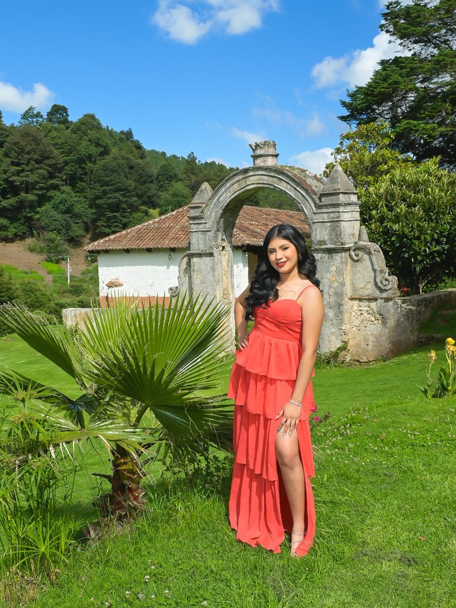
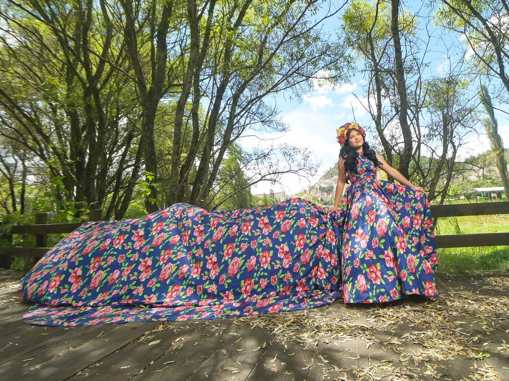
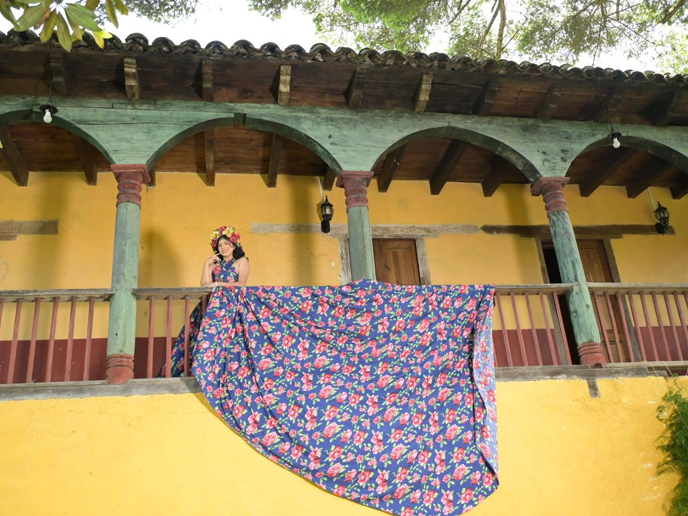
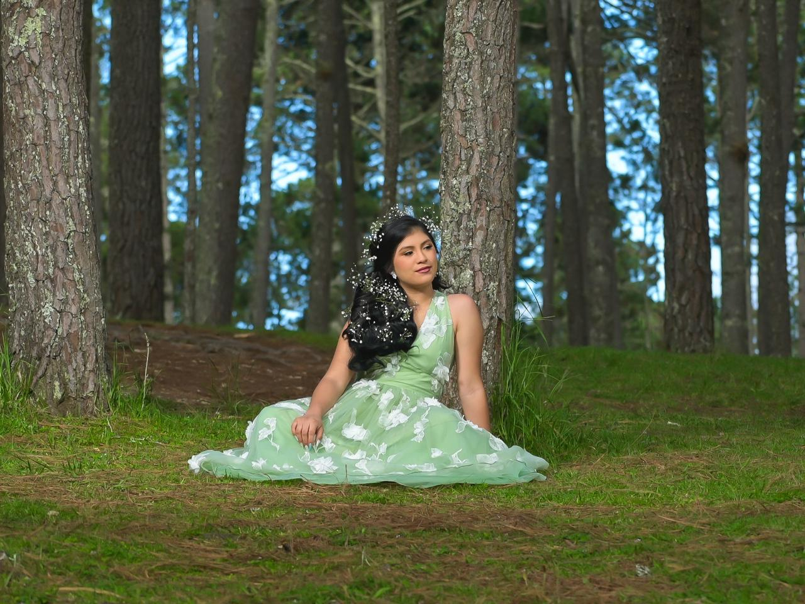
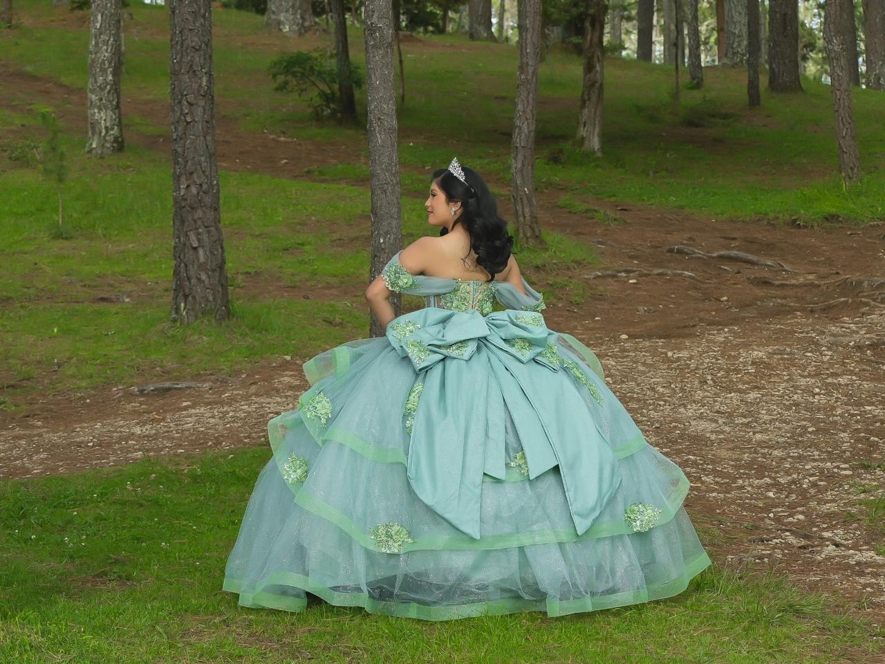
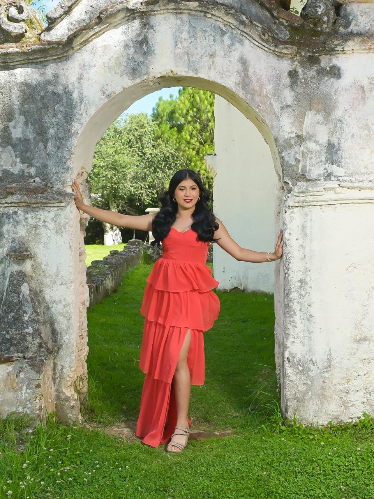

Con la bendición de Dios y de mis padres
XV Años
Candy Fernanda
25 · Julio · 2026
Familia
Quienes me acompañan
Mis Padres
Arq. Pablo de Jesús Pérez Domínguez
&Lic. Beatriz López De los Santos
Padrinos de Velación
Ing. Alex Pérez Dominguez
&Ing. Maria De Jesus Lázaro Sánchez
Padrinos de Brindis
Ing. Dave Uriel Alejandro Angulo
&Lic. Itally Morales Pérez
Falta muy poco
Cuenta regresiva
Dónde y cuándo
Itinerario
Ceremonia
Parroquia De la Virgen María
7:00 P.M.
Recepción
Salón Zafiro
8:00 P.M.
Etiqueta
Código de vestimenta
Formal
Mesa de regalos
Lluvia de sobres
Tu presencia es el regalo más importante y el motivo de nuestra celebración.
Si deseas hacerme un obsequio adicional, la modalidad elegida es lluvia de sobres, por lo que agradeceré infinitamente un detalle en efectivo.
Recuerdos
Galería







Confirma tu asistencia
RSVP
Será un honor contar con tu presencia. Te pedimos confirmar tu asistencia antes del